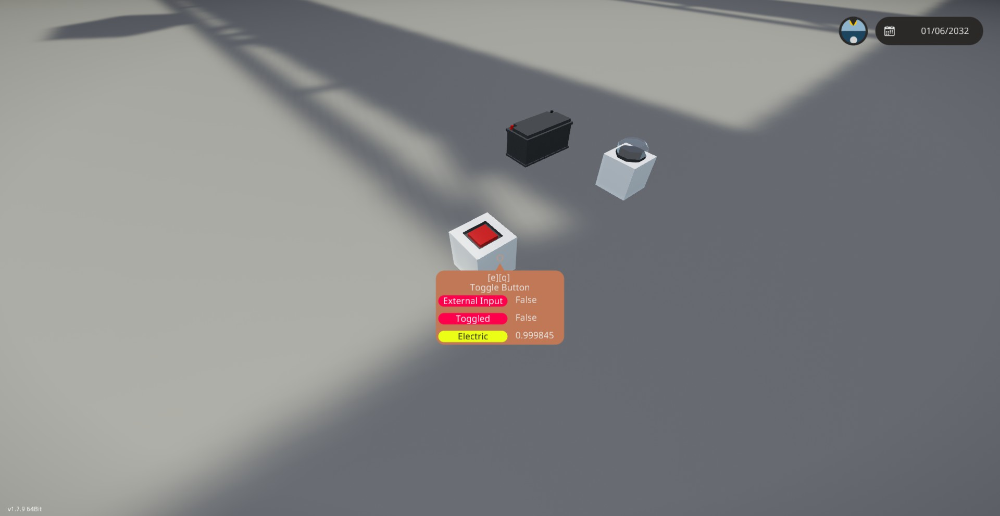

Stormworksについて
これはまだStormworksを買っていない人向けに、Stormworksとはどんなゲームかを軽く説明するページです。
どんなゲームか？
Stormworksは「ストームワークス」と読み、よく「ストワ」と略されます。ストワをする人たちはよく「ストームワーカー」と呼ばれたりします。簡単にいうと乗り物を作るゲームです。その作った乗り物で救助活動をする・・・というのが本来のゲームの目的です。まあ救助してる人あんま見ないけど。
公式では英語しか対応していませんが、 ワークショップ にて有志の方が作成した日本語訳がありますので、英語が読めなくてもある程度は大丈夫です。
デベロッパーは「Geometa」というイギリスのゲームスタジオです。
多分正式な読み方は「ジオメタ」なんでしょうけど、日本のストームワーカーからは「げおめた」と呼ばれたりしてます。
また、マルチプレイにも対応してします。特にSteamのフレンド同士であれば、サーバーを用意しなくても簡単にマルチプレイができます。
ゲームのアップデートは基本的には2週間おきに来ます。
告知ウィークというゲームに関する情報や次回のアップデートに関する情報などが公開される週と、アップデートの週が交互に毎週来る感じです。
アップデートや告知ウィークでの情報の公開などは毎週金曜日の26時(土曜日の早朝2時)前後に来ます。たまに0時に来たり4時に来たりと、結構前後するときもあります。
アップデートとは別に、大きな新要素の追加などのメジャーアップデートや、新DLCのリリースなどは2週間おきとはまた別でリリースされたりします。
どれだけ自由度が高いのか？
ほんとになんでも作れます。自分が作った乗り物でも、船、潜水艦、飛行機、ヘリコプター、車など...ここにある物以外でも、戦車にロボット、誘導ミサイルに対空ミサイルや対空機銃など、 ほんとに色々な物が作れます。多分現実にあるものはほぼほぼ作れるんじゃないかな。
もっと知りたかったら、Twitterの#stormworks を見れば、おおむねどんな物が作れるか分かる・・・かな？
どうやって乗り物を作るのか？
これは恐らく実際に見てもらった方が早い。このような画面で乗り物を作っていきます。1ブロックは0.25mで、船などの大きい乗り物を作るには十分ですが、 車などの小さい乗り物を作るにはちょっと大きいかな？って感じです。
船だとこんな感じ。
このような乗り物を作る場所は「ワークベンチ」と呼ばれていて、陸上と海上、あとその他で複数のワークベンチがあります。
例えば、最初に紹介した車を作ってるワークベンチはこんな感じ。
右の青い台みたいなのがワークベンチ本体で、今見ているところに作った乗り物が出る。
これはワークベンチの外を表示する機能。
サイズは横35.75m(143ブロック)、高さ9.25m(37ブロック)、奥行34.25m(137ブロック)です。
こちらは船用のワークベンチ。
こちらのサイズは横21.75m(87ブロック)、高さ19.75m(79ブロック)、奥行56.75m(227ブロック)です。
船用にしては小さめかもしれませんが、恐らくゲームのパフォーマンスとか色々な理由でこのサイズになっているのだと思います。
一応ゲームのxmlファイルを書き換えることでおよそ120mぐらいまでサイズを大きくすることがでます。
なのでWW2あたりの駆逐艦であれば実寸大で作れます。（それでもそこそこゲームが重くなりますが）
このゲーム乗り物同士を連結することもできるので、分割すれば実寸大の戦艦や空母も作ることはできます。
まあ戦艦や空母サイズになってくると、だいぶゲームが重くなってきますけどね。
それぞれ乗り物を出すとこんな感じ
乗り物の作成画面はこんな感じ。
これはTabキーか真ん中下右にある水色の丸いボタンを押した画面。
マイクラでいうとクリエイティブでEを押したときに出るインベントリ画面みたいな感じ。
乗り物はノードで制御します。主に使うノードは「数字」「on/off」「複合信号（コンポジット）」「電気」「映像」の4つです。
例えば、ここにボタンを押すとライトが光るという仕組みのものがあります。
ノードはこうなっています。
これは制御ノード
左にあるのがボタンです。このボタンに穴が開いていない赤い丸があります。これは出力を表し、ボタンが押されるとそこからon信号が流れます。
その信号を、右にあるライトに繋げます。ライトにあるのは真ん中に穴が開いている赤い丸です。これは入力を表し、ここにon信号が流れるとライトが光ります。
次に電気ノード
上にあるのがバッテリーです。バッテリーは電力をためることができ、電力ノードから電気を提供します。
電気ノードに入力・出力の概念は無く、何も考えずに繋ぐだけです。
このゲームは電気を使うパーツがあり、それらのパーツにはこのように電気ノードを使って電気を供給します。
電気はもちろん使うと減っていきます。なので、乗り物に発電機などを付ける必要があります。
一応、電気を繋がなくても良い電力無限という設定もあるので、最初の内はその設定を有効にして乗り物を作るのもいいかもしれません。
実際にボタンを押してみた結果はこんな感じ。

もう1つ別の例を。
これはレバーので上に電動ピボットに付いている棒が回るというという仕組みのものです。
これが制御ノード。
左のがレバーで、最小値が0、最大値が1、初期値が0に設定してあります。真ん中に穴の開いていない緑の丸から数字が出力されます。
右のは小型電動方向ピボット。-1から1で-90度から90度まで回ります。真ん中に穴の開いてる緑の丸から数字を受け取ります。
結果はこんな感じ。
次は動力。
このゲームではスクリューやプロペラ、タイヤなどを使って乗り物を動かします。それらのパーツには動力を繋ぐ必要があります。
動力はパイプで繋ぎます。この画像では、中型モーターで生み出した動力をスクリューに繋いでいます。
こちらは複数のサスペンション付きタイヤを繋げている画像。
「パイプの中どうなってんねん」というツッコミはさておき、このゲームではこのようにパイプをつなぐとパーツへ動力を伝えることができます。
また、ギアボックスもあります。このギアボックスはon/offでギア比を変えることができるので、車のギアのようなものを作ることもできます。(簡単に言うと自転車のギア)
次は液体。
このさっきまでは扱いが簡単なモーターを使っていましたが、このゲームにはディーゼルエンジン、ジェットエンジン(ガスタービン)、蒸気エンジン(石炭ボイラー・軽油炉・電気炉・原子力)、モーターなどで動力を生み出します。
その中でもディーゼルエンジンやジェットエンジンは燃料が必要です。ディーゼルエンジンに関しては燃料の他にも空気を取り入れ排気ガスを出す必要があります。
燃料に水、空気や排気ガスなどを含めたこれら（以降は液体と呼ぶ）は、動力と同じでパイプを使ってやり取りします。
ちょっとややこしいけどディーゼルエンジンを例にするとこんな感じ。
他にも、火災を消火するための水や海水などをパイプを使って放水ノズルから出したり、液体ポートから汲み上げたりできます。
今まで紹介してきた要素の他にも、Luaというプログラミング言語で高度な処理をしたり、これまたLuaで自作アドオンを作ったりと、様々な要素があります。
それらの要素を組み合わせて車や船、飛行機など様々な乗り物を作ることができます。
これはゲーム内フォトモードで撮った自作の架空スポーツカー・・・の警察仕様。
救助用に作った船。
色々な日本機を参考に作った架空の攻撃機。下に付いているのは自作の魚雷。
また、このゲームはSteamのワークショップで他に人が作った乗り物やアドオンなどで遊ぶことができます。
マップについて
基本的に大自然です。ちょくちょく小さな村？っぽいのはありますが、ほんとに基本的は大自然がほとんどです。マップはこんな感じ。
下にあるのは後で紹介する「産業DLC」で追加される島。「砂漠」とか「新大陸」とか呼ばれてます。
上はこのゲームに元からある島。「ソーヤー島」とか「本土」とか呼ばれてたりします。
この2つの島は線路でつながっています。産業DLCを買っていないとその線路は途中で行き止まりになります。
ソーヤー島はこんな感じ。
また、ソーヤー島のおよそ100km北に行くと北極があります。ソーヤー島に比べるとだいぶ狭いですが。
北極はこんな感じ。

DLCについて
このページを書いている2023年6月現在、StormworksのDLCは2つあります。Stormworks: Search and Destroy
Stormworks: Industrial Frontier
それぞれ値段は1,010円。まあ将来的に値段が変わる可能性はまあ・・・1%ぐらいあるかもですが。
この2つのDLCについて軽く解説します。
Stormworks: Search and Destroy
通称「武器DLC」と呼ばれるDLCで、買うと武器が使えるようになります。また、戦闘用の公式アドオンが使えるようになります。敵AIを追加するものですね。買わなくても装飾用アイテムとして砲のパーツや手持ちの銃などは使えます。
Stormworks: Industrial Frontier
「産業DLC」とか言われてたりするDLCです。これは新しい大陸を追加するDLCで、マップの面積がおおよそ2倍になります。まあそれぐらい広いので・・・。マップだけではなく、金の採掘や加工、あとその他の鉱石を採掘できるようになります。
採掘自体は産業DLC無しでもできますが、産業DLCを導入すると採掘できる場所が増えたり、採掘できる鉱石は増えたりします。
また、野生の動物なども追加されます。これは武器DLCの敵AIアドオンを同じで、野生動物が出てくるようになるアドオンが使えるようになるといった感じです。
最後に
長々とこのゲームの魅力を書きましたが、ここまで書いておきながらなんですけど、複雑で自由度が高いくせしてまともなチュートリアルが少ないという欠点があります。なので、ぶっちゃけ初心者にオススメできるものでは・・・まあ無いと思ったりはします。
それでもなおやってみたいというのであれば、我々ストームワーカーはあなたを歓迎します！
いかにStormworksのリンクを貼っておきます。もし興味があればぜひ！
ちなみにですが、このゲームってあんまりセールやっていないので、セールを待つよりすぐに買った方が良い・・・かもしれない。
新DLCや新しい大きな要素が追加されるメジャーアップデートがリリースした時にセールやってる印象。
また、このゲームはあまり有名な方では無いので調べてもあまり良い情報が出てこないことが多いです。
恐らく、非公式wikiの方がそこそこ情報多い・・・かな？
でもちょくちょく情報が古かったりするので、そこだけ注意です。(まあこのゲームはアプデが頻繁に来るという特性上、仕方ないことではある)